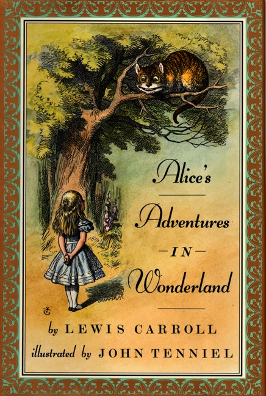
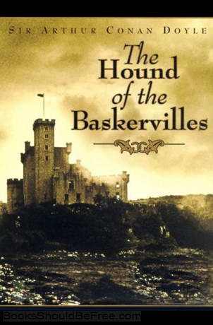
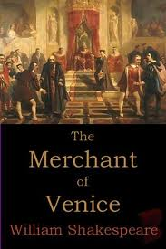

READERS' CHOICE
CONTENTS
|
|
Alice in Wonderland |
Famous Five |
|
The Hound of the Baskervilles |
The Mystery of the Silver Blaze |
|
The Merchant of Venice |
Romeo and Juliet |
INTRODUCTION
Books are really a pleasure house of knowledge, experience, pleasure, information and mental refreshment. Hence, a
reading habit should be inculcated at a very young age. To enhance this habit of an individual bookstores are available
electronically on the internet. These bookstores are known as Ebookstore. Readers' Choice is an online bookstore offering
books for all generations.
We, the hosts of Readers' Choice welcome you to the world of reading. Here, you can find a wide variety of books for all
types of readers. To an emotional type of reader, there are books of drama, poetry, fiction, fantasy, romance, travel
and essays. Then there are books of light nature which include story, comics, jokes, and cartoon books. For mystery
loving people detective novels are available to give them pleasure laced with thrill and sensation. We also have books
and journals on interesting topics like Science, Religion, Astronomy and on Literature. We even have a collection of books
related to history, fine arts and many more.
- Alice in Wonderland (By Lewis Carroll)

Alice was beginning to get very tired of sitting by her sister on the bank, and of having nothing to do. Once or twice she had
peeped into the book her sister was reading, but it had no pictures or conversations in it. So she was considering in her own
mind (as well as she could, for the hot day made her feel very sleepy and stupid), whether the pleasure of making a
daisy-chain would be worth the trouble of getting up and picking the daisies, when suddenly a White Rabbit with pink
eyes ran close... Read more>>
- Five Go adventuring Again (By Enid Blyton)
This book is the second book in the famous five series. In it, the five characters are Anne , her two brothers- Julian and Dick and their cousin Georgina, who likes
to be called George. Also, their group includes George's beloved dog, Timothy, who is very friendly. They have amazing adventures. In this book...
Read more>>
- The Hound of the Baskervilles (By Sherlock Holmes)

Sir Charles Baskerville is found lying dead on the grounds of his country house, Baskerville Hall. The cause is ascribed
to a heart attack. Fearing for the safety of Sir Charles's nephew and only known heir, Sir Henry Baskerville, coming
from America to claim his inheritance, Dr James Mortimer travels to London and asks Sherlock Holmes for help. Mortimer explains that the Baskerville family is
afflicted by a curse. Sir Charles Baskerville had become fearful of the legendary curse and its hellhound. The elderly man's heart...
Read more>>
- Sherlock Holmes and the Mystery of the Silver Blaze (By Lewis Carroll)
This is another one of the famous detective Sherlock Holmes's adventure mysteries. In this particular book,Sherlock Holmes and his friend Dr. Watson travel to
Dartmoor, summoned to investigate a crime : the disappearance of the great race horse Silver Blaze and the murder of the horse's trainer , John Straker...
Read more>>
- The Merchant of Venice (By William Shakespeare)

Bassanio, a young Venetian of noble rank, wishes to woo the beautiful and wealthy heiress Portia of Belmont. Having squandered his estate, Bassanio approaches
his friend Antonio, a wealthy merchant of Venice and a kind and generous person. Antonio agrees, but since he is cash-poor - his ships and merchandise are busy at
sea - he promises to cover a bond if Bassanio can find a lender, so Bassanio turns to the Jewish moneylender Shylock and names Antonio as the loan's guarantor.
Shylock, who hates Antonio because of his Anti-Judaism and Antonio's customary refusal to borrow or lend money with interest, is at first...
Read more>>
- The Merchant of Venice (By William Shakespeare)
This is one of the best and most deepest romantic stories in the world. A favourite classic of all, this book contains two of the best known characters of William
Shakespeare- Romeo and Juliet. The story revolves around these two lovers and how deep and pure their love is for each other, however the problem is that their
families have been sworn enemies since many generations...Read more>>
GO UP
For any complaints or suggestions, you can mail your comments to
RC_helpers@yahoo.com
All comments are welcome, if there is any problem regarding our service, we will be
sincerely listening to all complaints and will be pleased to solve your problems.
Thanks again, from the Reader's Choice E-bookstore staff!
THANK YOU
Prepared By:
Sebanti Dasgupta(Roll No.: 13)
Shaily Dave(Roll No.: 26)
Class/Sec: X-C